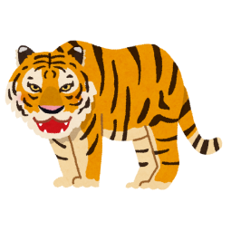

まめ知識
ライオンの生活
ライオンは主にアフリカのサバンナに生息し、群れを作って生活します。オスのライオンはたてがみを持ち、これが他の動物から身を守るための防具として機能しています。
パンダの食事
パンダの主食は竹で、1日に12〜38kgの竹を食べます。実はパンダは肉食動物としての歯や消化器官を持っていますが、進化の過程で竹を主食とするようになりました。
キリンの長い首
キリンの首は約2メートルにも達します。この長い首のおかげで、高い木の葉を食べることができ、捕食者からも遠くを見渡すことができます。

ゾウの記憶力
ゾウは非常に優れた記憶力を持っています。水源や食べ物の場所、他のゾウの個体識別など、長い間記憶していることができます。

トラの縞模様
トラの縞模様はそれぞれ異なり、一匹一匹が異なるパターンを持っています。この模様はカモフラージュとして機能し、草むらなどで獲物に近づく際に役立ちます。
カバの汗
カバの汗は赤色をしており、これが日焼け止めや抗菌作用を持っています。この特殊な汗のおかげで、カバは強い日差しの下でも皮膚を守ることができます。